1998 | 1H 43M | 코미디
트루먼 버뱅크는 작고 조용한 섬마을에 사는 평범한 세일즈맨이다.
그런 그가 자신의 삶에 대해 의문을 갖기 시작한 것은 평소와 다름없이
평범한 어느 날 겪은 여러 상식 밖의 일들이 벌어지고 나서부터였다.
평생을 그다지 신경쓰지 않고 지냈던 일상이었지만 주변을 보니 이상한
일이 너무 많았다.결국 자신이 특별한 상황에 놓여있다는 확신을 하게된
트루먼은 첫사랑 실비아의 모든 것이 다 거짓라는 말을 되새기며
일상으로부터 탈출을 결심하게 되는데...
감독 | 피터 위어
출연진ㅣ 짐 캐리(트루먼 버뱅크), 로라 리니(메릴 버뱅크), 애드 해리스(크리스토프)
Good mornig! and in case I don't see ya, Good afternoon, good evening and good night!
굿 모닝! 못 볼지도 모르니 미리 인사하죠! 굿 애프터눈, 굿 이브닝, 굿 나잇!
좋아하는 코멘트
새장은 새를 위한 것일까?
- 왓챠피디아 '메뚜리언'트루먼의 선택은 가짜 삶에서 진짜 삶으로의 진보가 아니다.삶 A에서 삶B로의 전환이다.
- 이코노미톡!뉴스 '최영훈' 전문연기자들은 삶과 연기를 오간 것이고 트루먼은 기존의 삶에서 다른 삶으로 도전한 것이다.
우리가 트루먼의 삶을 진짜다 가짜다 판단하며 이렇게 옥신각신 할 수 있는 건
그 삶이 영화화 되어 그 삶의 전모를 다 알 수 있기 때문이다. 그러나 그 다 앎에도 불구하고
그 삶 중 어떤 삶이 진짜 삶인지, 어떤 삶이 행복하고 삶다운 삶인지 알 수 없다.
삶과 행복의 평가는 타자에게 있는 것이 아니라 주체에게 있기 때문이다.